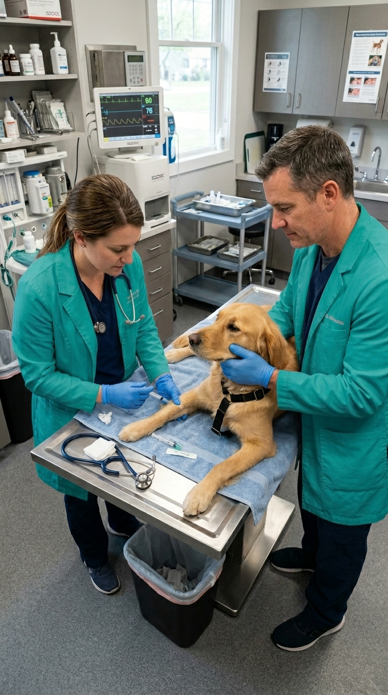

Cuidamos de tu perro o gato con medicina avanzada, instalaciones modernas y el cariño que se merecen (Fear Free). Especialistas en medicina preventiva y urgencias.


Sin esperas interminables. Valoramos tu tiempo y la salud de tu mascota.
Equipo médico altamente cualificado en continua formación y desarrollo.
Tecnología de vanguardia para diagnósticos precisos y tratamientos seguros.
Gestiona tus citas al instante desde tu móvil. Rápido y sin complicaciones.
Todo lo que tu mascota necesita bajo un mismo techo. Desde chequeos de rutina hasta intervenciones quirúrgicas complejas.
Revisiones completas para asegurar que tu compañero está en su peso y estado óptimo. Incluye revisión de piel, dientes, ojos y oídos.
Anticiparse es la mejor cura. Planes de salud diseñados para cada etapa de su vida, desde cachorros hasta mascotas senior.
Protege a tu mascota de enfermedades graves con un calendario de prevención estricto. Usamos vacunas de última generación.
Atención prioritaria y rápida cuando cada segundo cuenta. Servicio 24/7 con equipo de guardia especializado.
Quirófano equipado con monitorización avanzada, anestesia inhalatoria y protocolos de esterilización hospitalaria.
Resultados rápidos en la propia clínica. Hematología completa, bioquímica, citologías y diagnóstico por imagen.

Sabemos que tu mascota es un miembro más de la familia. Por eso, hemos diseñado una experiencia veterinaria distinta: sin estrés, transparente y profundamente humana.
Nuestra vocación nace del amor incondicional por los animales. Tratamos a tu compañero de vida exactamente con el mismo cuidado, respeto y cariño con el que trataríamos a los nuestros.
"Increíble el trato. Mi perro Max siempre tenía terror de ir al veterinario, pero aquí entra moviendo la cola. La doctora Ana tiene una empatía brutal. 100% recomendados."

"Llevé a mi gata por una urgencia y actuaron rapidísimo. Te explican todo con claridad y transparencia en los precios. Las instalaciones son súper limpias y modernas."

"Son nuestra clínica de confianza desde hace 5 años. Ya sea para vacunas o dudas, siempre nos atienden con una sonrisa. Además, gestionar la cita por móvil es comodísimo."

"Mi conejo necesitaba una operación urgente y el equipo de Vivalnet fue excepcional. La recuperación fue rápida y siempre estuvieron disponibles para mis consultas."
"El plan de salud para mi perra senior ha sido un acierto. Los controles periódicos y el trato delicado han mejorado mucho su calidad de vida. Gracias por todo."

"Profesionales de verdad. Mi gato es muy nervioso y aquí le han ganado la confianza. El ambiente Fear Free se nota, no hay estrés ni llantos. ¡Mil gracias!"

"Excelente atención veterinaria. El seguimiento post-operatorio de mi hurón fue impecable. El equipo realmente se preocupa por cada animal como si fuera suyo."

"Llevo a mis dos perros aquí desde cachorros. El servicio de peluquería canina combinado con la revisión veterinaria es genial. ¡Siempre salen felices y guapos!"

"Increíble el trato. Mi perro Max siempre tenía terror de ir al veterinario, pero aquí entra moviendo la cola. La doctora Ana tiene una empatía brutal. 100% recomendados."
"Llevé a mi gata por una urgencia y actuaron rapidísimo. Te explican todo con claridad y transparencia en los precios. Las instalaciones son súper limpias y modernas."
"Son nuestra clínica de confianza desde hace 5 años. Ya sea para vacunas o dudas, siempre nos atienden con una sonrisa. Además, gestionar la cita por móvil es comodísimo."
"Mi conejo necesitaba una operación urgente y el equipo de Vivalnet fue excepcional. La recuperación fue rápida y siempre estuvieron disponibles para mis consultas."
"El plan de salud para mi perra senior ha sido un acierto. Los controles periódicos y el trato delicado han mejorado mucho su calidad de vida. Gracias por todo."
"Profesionales de verdad. Mi gato es muy nervioso y aquí le han ganado la confianza. El ambiente Fear Free se nota, no hay estrés ni llantos. ¡Mil gracias!"
"Excelente atención veterinaria. El seguimiento post-operatorio de mi hurón fue impecable. El equipo realmente se preocupa por cada animal como si fuera suyo."
"Llevo a mis dos perros aquí desde cachorros. El servicio de peluquería canina combinado con la revisión veterinaria es genial. ¡Siempre salen felices y guapos!"
Encuentra respuestas a las preguntas más comunes sobre nuestros servicios veterinarios.
Sí, recomendamos pedir cita previa para garantizar una atención sin esperas y dedicarle a tu mascota todo el tiempo que merece. Puedes hacerlo online a través de nuestra web, por teléfono o WhatsApp. Para urgencias, atendemos directamente sin necesidad de cita previa.
Sí, disponemos de un servicio de urgencias 24 horas, 7 días a la semana. Fuera del horario comercial, atendemos mediante llamada previa para que el equipo esté preparado a vuestra llegada. El teléfono de urgencias es el 900 123 456.
La vacuna de la rabia es obligatoria por ley. Sin embargo, recomendamos la polivalente y otras específicas según el estilo de vida de tu mascota para una protección completa. Nuestros veterinarios te asesorarán sobre el calendario de vacunación más adecuado.
Generalmente entre los 6 y 12 meses, aunque depende de la raza y el peso. Nuestros veterinarios evaluarán a tu mascota individualmente para determinar el momento óptimo. La esterilización temprana tiene múltiples beneficios de salud.
Sí, realizamos visitas para vacunaciones y consultas generales cuando el desplazamiento supone un estrés elevado para la mascota, especialmente útil para gatos o animales asustadizos. Consulta disponibilidad y tarifas específicas.
Aceptamos efectivo, tarjetas de crédito/débito y Bizum. Para tratamientos o cirugías de mayor coste, también ofrecemos opciones de financiación personalizada. Pregunta en recepción por nuestras opciones de pago fraccionado.
Recomendamos traerlos con algo de hambre para poder usar premios, usar transportines cómodos para los gatos y mantener la calma. Somos clínica Fear Free: el manejo amable es nuestra prioridad. Evita alimentar a tu mascota 2-3 horas antes de la consulta si requiere análisis de sangre.
Sí, contamos con planes preventivos anuales que incluyen vacunas, desparasitaciones y descuentos en consultas y servicios, adaptados a cachorros, adultos y mascotas senior. Ahorra hasta un 30% en los cuidados básicos de tu mascota.
Reserva tu cita hoy mismo o contáctanos si necesitas asistencia inmediata. Estamos listos para ayudarte.
Cero compromiso. Si tienes dudas, contáctanos por WhatsApp primero.